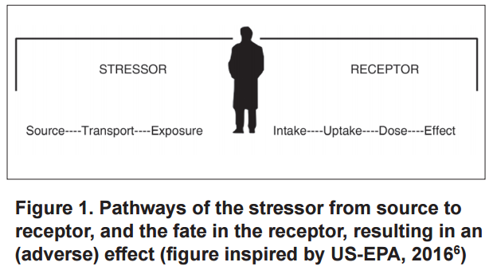
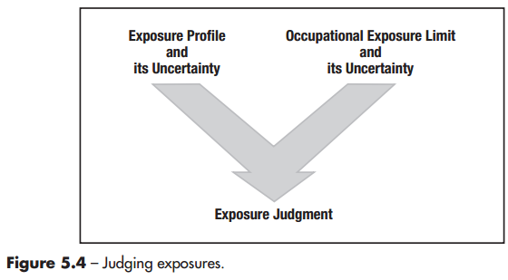
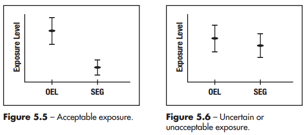
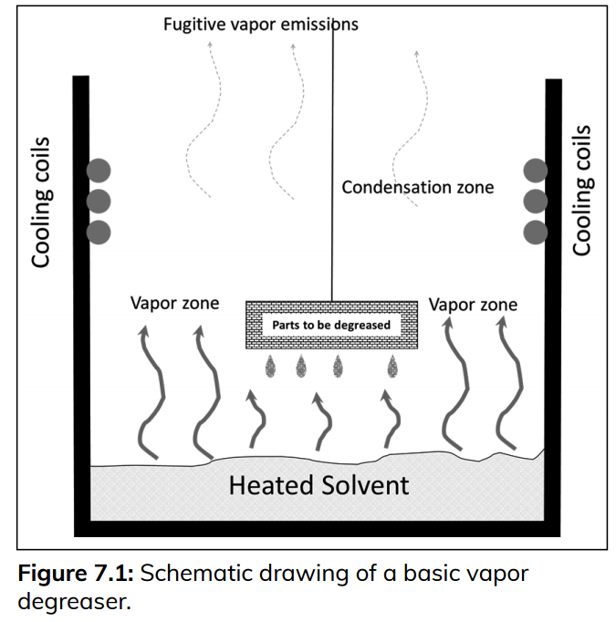
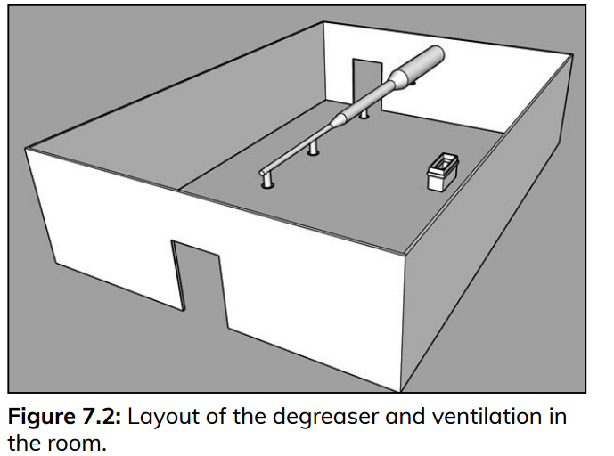
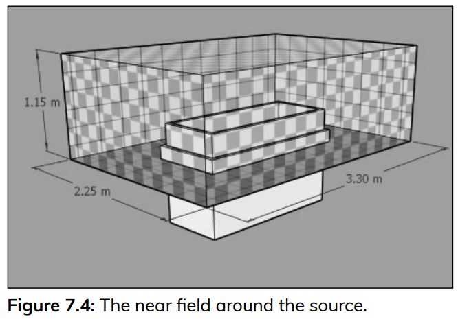

先期暴露風險評估技術介紹
2026-07-30
1. EA整體概念？
暴露評估(EA)？
- 暴露：Source -> Transport -> Contact 的連續過程。
- Exposure = Source + Generation + Transport + Ventilation + Worker Location
- 職業衛生決策架構 [1]
- 預期、認知、評估與控制 + 確認（Confirm）
- 暴露評估(Exposure Assessment)：指以定性、半定量或定量之 方法，評量或估算勞工暴露於化學品之暴露危害情形。
{kind=link}
Stressors - receptors model
[2]

風險評估？
- Health Risk = (Exposure) (Toxicity)
- 健康風險 = f (暴露量 ， 毒性)
- 「毒性」（每單位暴露量對目標器官所產生的健康效應）
- 暴露數據必須連結健康效應才有意義。
- 暴露風險？ (數據)
- 暴露評估 + 分級管理 ？
- 健康風險 = f (暴露量 ， 毒性)
- 暴露評估（EA）–> 暴露風險 ？
- 準確性？效率？效能？
- 取決於 OH 執行 EA 的品質。
- 準確性？效率？效能？
EA 範圍與工具
- 範圍：不限於化學物質，還擴及皮膚、噪音、熱危害與人因工程等。
- 評估工具：更多數學模型及貝氏決策分析（Bayesian Decision Analysis, BDA）
- 處理含有未檢出值的小型數據集特別有用。
- 從「合規性」到「全面性」
- 傳統「合規性策略（Compliance Strategy）」–> 「全面性評估策略（Comprehensive Strategy）」
- 許多化學品缺乏OEL，且現有標準未必能保護最敏感的勞工，也無法提供員工每日暴露變異的歷史數據。
- 評估「所有勞工、在所有工作日、對所有危害物」的暴露情況。
- 建立全面的歷史暴露數據庫，不僅能在法規標準變嚴格時迅速因應，還能協助流行病學研究與員工的健康管理。
- 傳統「合規性策略（Compliance Strategy）」–> 「全面性評估策略（Comprehensive Strategy）」
EA 步驟
- 起始（Start）：確立企業的評估目標與策略
- 基本特徵描述（Basic Characterization）
- 暴露評估：SEGs， OEL，決策統計量（Decision Statistic）\(X_{95}, UTL\)
- 進一步收集資訊：針對「不確定」的暴露。
- 優先安排空氣採樣或生物監測、數學建模，或收集毒理/流行病學數據等。
- 危害控制：Hierarchy control，分級管理 and confirm
- 重新評估：定期，變更
- 溝通與文件化（Communications and Documentation）
- 成功執行的關鍵：專業判斷+ 利害關係人的參與 + 資源的有效配置。 (雇主支持？)
EA 策略
- 策略類型
- 全面性策略 (Comprehensive Strategy)
- 掌握暴露強度與時間變異性
- 合規性策略 (Compliance Strategy)
- 非例行性作業 (Non-routine Operations)
- 全面性策略 (Comprehensive Strategy)
- 專業判斷 (Professional Judgment)
- 以科學(含統計)為基礎ˋ
- 產出：「書面」暴露評估計畫 與 暴露評估報告
暴露實態（Exposure Profile）
- 暴露實態：指描述SEGs的暴露強度及暴露強度隨時間變化之情形。
- 暴露強度：具時間變異性（如每日變化）與推估值
{kind=link}
名詞說明
- 先期暴露風險評估(Preliminary Exposure Risk Assessment)：指 在擬定作業環境監測採樣策略前，運用現有資訊、定性判 斷、簡單的半定量或是定量模式推估的方法，對 SEG 內勞工 暴露於特定化學因子的可能性及其潛在健康風險進行初步評 估的過程。
- 相似暴露族群(Similar Exposure Group；SEG)：指一群勞工因 具相似的作業方式、工作製程、使用原物料及危害物接觸頻 率，致其暴露之有害物種類、強度及頻率均相似者。相似暴 露族群的判定是藉由勞工的工作內容、製程、控制設備、原 料物質等做為分類的依據，在執行作業環境監測後則需利用 統計確認之。
- 最大暴露危險族群(Maximum Exposure Risk Group；MEG)指 各相似暴露族群中，具有最高暴露狀況實態者。
- 全盤式暴露評估(Comprehensive Exposure Assessment)：指對 事業單位對全部相似暴露族群(SEG)之所有暴露，藉作業環 境監測實施暴露實態評估之採樣策略。
名詞說明
- 採樣
- 全面採樣（Full Sampling）：指無論風險等級高低，對每個相 似暴露族群皆進行採樣者。
- 完整採樣：指對每個相似暴露族群的採樣樣本數量達其統計 意義足以描述其暴露時態者。
- 監視採樣：針對低暴露風險 SEG，以例行性方式追蹤作業環 境暴露狀況及風險趨勢的採樣活動。
- 診斷性採樣：針對作業環 境中潛在暴露因子及高風險區域進行的初步或特定性採樣， 以確認可能的職業健康風險。通常用於新作業、製程變更或 初次評估，特性為快速、針對性、揭示潛在問題。
初始 EA (Initial EA)
- 是整個暴露評估分層、循環過程中的第一個階段
- 利用手邊現有的資訊來進行評估，但通常缺乏足夠定量數據。
{kind=link}
- 初始評估主要作為篩選工具
- 迅速判斷出微不足道（可接受）及明顯超標的暴露（不可接受）。
- major/minor cuts： 1/10 OEL + 不太可能導致不良健康後果 + 不違反法規要求
- 迅速判斷出微不足道（可接受）及明顯超標的暴露（不可接受）。
- 後續循環釐清「不確定」的風險
暴露分級（Exposure Ratings）
估算暴露量相對於「職業暴露容許標準（OEL）」的比例程度
- 在缺乏大量監測數據的初始評估階段非常有用
- 假設沒有使用個人防護裝備 (RPE)狀態下
- 缺乏 OEL 時：可以根據基礎資料收集到的毒理學資訊，估算並設定一個「暫定/工作 OEL」，進行分級。
推估暴露實態與分級的工具主要有三種：[1]
- 監測數據 (Monitoring Data)
- 替代數據 (Surrogate Data)
- 數學建模 (Modeling)
暴露分級（Exposure Ratings）
{kind=link}
{kind=link}
監測數據 (Monitoring Data)
- 分「過去的個人監測數據」與「篩檢測量 Screening」
- 篩檢測量 (Screening measurements) ：合適的直讀式測量
工具：使用如檢知管、光離子化偵測器（PID）、可呼吸性氣膠監測儀或噪音計等技術，提供快速的測量結果，協助校準工業衛生人員的專業判斷。
應用：可用於檢查「最壞情況（worst case）」或典型的暴露水準。釐清不同勞工或SEGs間的變異性。
效能：透過篩檢測量，可以減少甚至消除進行昂貴個人監測的需求。
替代數據（Surrogate Data）
- 替代數據的應用必須非常謹慎，並高度仰賴專業判斷
- 替代數據也常用於估算混合物引起的暴露
- 主要分為以下兩大類應用方式：
- 來自其他危害因子的暴露數據 (Exposure data from another agent)
- 來自其他作業的暴露數據 (Exposure data from another operation)
- 替代數據是在初始暴露評估階段缺乏直接監測數據時，填補資訊空白並協助完成暴露分級的重要實用工具。
數學建模（Modeling）
- 基於物理與化學特性的預測模型 (Predictive modeling based on physical and chemical properties)
- 估計目前及推算歷史暴露
- 階層式方法 (Tiered approach)
- 刻意高估 (Purposeful overestimation)
- 基於製程資訊的預測模型 (Predictive modeling based on process information)
包含許多製程參數
建置製程模型來進行暴露評估
暴露判定（Judging Exposures）
- 初始EA伴隨著極大的不確定性
- OEL 本身也可能存在不確定性
 |
 |
{kind=link}
{kind=link}
- 解決策略
- 收集更多資訊：縮小不確定性。
- 直接視為不可接受：成本效益評估，直接採控制措施。
不確定的暴露 (Uncertain Exposures)
- 兩大主因：
- 暴露實態尚未充分掌握：強度與變異
- 缺乏健康效應數據：無可靠的OEL
- 管理不確定性 (Managing Uncertainty)
如果危害因子的毒性很低，且發生暴露的可能性也很低，那麼即使評估存在不確定性也無妨。
不確定性的重要性極高：如果暴露可能導致極端、不可逆的傷害 (irreversible harm)，那麼對於不確定性的容忍度就必須非常低，必須盡可能釐清暴露。
- 不確定性的兩大來源：
暴露的變異性：日常變異。
缺乏資訊：當完全沒有數據或知識時，這種不確定性的程度會非常巨大，甚至會完全掩蓋掉日常的變異性。
- 評估不確定性的工具： 主觀估計 (subjective estimate)；傳統統計分析(有實際的測量數值，計算95%CI）；機率分析工具 (如蒙地卡羅分析 Monte Carlo analysis，複雜或關鍵的暴露評估)。
EA循環，持續改善
{kind=link}
EA的具體產出
- 掌握SEG暴露實態推估
- 量化相對風險：相對於OEL的暴露分級
- 決策判定：暴露風險判定
- 後續風險管理 (分級管理)
- 排定後須行動優先順序並落實
- 釐清未知風險(不確定分級)，進一步收集資訊並解決。
- 暴露評估報告 (？)
2.先期暴露風險評估(EA)技術
數學建模（Modeling）
- EA目的：建立SEGs的暴露實態（含途徑、強度、持續時間與頻率），並將其與OEL（如 TWA-8、STEL）進行比較，以判定暴露是「可接受」、「不可接受」或「不確定」。
- 傳統上仰賴空氣採樣來建立暴露輪廓，但實際上，僅靠少數幾次測量是難以用參數統計學（如95%信賴區間）得出具備充分信心的結論。
- 初判再近一步確認 (降低不確定性)
數學建模主要用途
- 回推過去暴露
- 10年前的溶劑使用
- 舊廠房粉塵暴露
- 職業病鑑定
- 當沒有實測數據時，可利用模型估算。
- 預測未來暴露 (Anticipation)
- 新化學品導入
- 新製程設計
- 新設備購置
- 控制措施評估
- 增加通風量
- 局排設計
- 降低生成率
- 評估控制效果。
數學建模（Modeling）
為什麼需要數學建模？
- 資源有限與專業判斷的不足
- 純粹的專業判斷常會低估實際暴露
- 跨越時間的多元應用 (過去、當下、與未來)
- 測量只知結果，建模能知可能原因 (物化特性)
- 數學模型並不是為了完全取代空氣採樣，而是要提升決策品質。
- OH可以更自信地判定哪些低風險作業不需要採樣，進而將昂貴的採樣資源與分析成本，集中投入在真正高風險的暴露情境上。 (快篩？)
如何建模？
- 物理化學特徵 + 暴露時間
- 容許不確定性（夠接近了嗎？合理的最壞情況 reasonable worst case）
收集建模資訊
化學物質資訊 (G…)
空間資訊 (V…)
空氣混合狀態 (WMB, NF/FF…)
勞工作業活動模式
資訊品質決定模型價值 (Garbage in, garbage out)
- 模型輸出的結果高度依賴輸入資訊的品質。
定量 EA
分類
- 監測 (略)
- 推估模式
- 無通風推估模式(Zero Ventilation Model)
- 飽和蒸氣壓模式（Saturation Vapor Pressure Model）
- 暴露空間模式（Box Models）
- 完全混合模式（Well-mixed Room Model）
- 二暴露區模式（Two-Zone Model）
- 渦流擴散模式(Turbulent Eddy diffusion model)
- 統計推估模式(Statistical models)
- 其他具有相同效力或可有效推估勞工暴露之推估模式
推估模式方法分層(Tiered Approach)
{kind=link}
基本參數: 汙染物生成率
- G， Generation Rates ，mg/min
- 在空氣濃度建模中，準確估算化學物質釋放到空氣中的「生成率（或稱排放率）」是極為關鍵的步驟。
- 質量平衡法 (Mass Balance)
- 限制
無法反映短期波動：無法呈現製程中忽高忽低的間歇性釋放或極端峰值（peaks）。
不等於實際空氣濃度：「總排放量」不能直接等同於室內空氣的濃度。
- 限制
- 排放係數法 (Emission Factors)
- 限制：除了前述外，還有製程差異「排放係數是製程的函數」。
Tier I 模式
1. 無通風推估模式(Zero Ventilation Model)
- 質量守恆原理，假設最糟情境，估算密閉空間中的最終平均濃度(最高值)。其基本假設為：
- (1) 零通風(Zero Ventilation)
- (2) 完全逸散與混合
- (3) 無移除機制
- 公式 \(C_{A}=\frac{M_{A}}{V}\)
- MA：化學品A散布至空氣中的總質量(mg)；V：無通風室內之空氣體積(m³)。
實作情境- 1.無通風推估模式
第一階段：情境描述 (Scenario)
- 事件發生：你是一家中型製造廠的環安衛 (EHS) 人員。某天早上，一名員工打電話請病假，表示自己有嚴重的胃痙攣。
- 懷疑主因：該員工懷疑這與他昨天打翻液體有關。昨天他在工作站打翻了一瓶化學品，隨後用工廠抹布將其擦乾。他當時覺得化學品味道很重，但沒有感到不適。
- 你的任務：由於症狀是延遲發作的，你需要針對這起非典型暴露事件進行調查。你必須推估該員工在此次溢漏事件中的暴露濃度，以判斷其腹痛是否與暴露有關。
實作情境- 1.無通風推估模式 (續)
第二階段：收集建模資訊
- 化學品資訊：打翻的物質是甲苯 (Toluene)。液體密度為 0.87 g/mL。容許標準 (OELs)：PEL TWA-8 (8小時時量平均容許濃度) 為 750 mg/m³；更嚴格的 TLV TWA 為 75 mg/m³。
- 暴露時間與強度：
- 背景濃度：該工作區平時監測的甲苯暴露濃度為 25 mg/m³。
- 溢漏時間點：事件發生在 8 小時班次中的第 5 個小時（這代表溢漏後的暴露時間最多只有 3 小時）。
- 溢漏量：原本 500 mL 的瓶子大約半滿，因此約打翻了 250 mL。揮發時間：員工用抹布擦拭後將其放在 2 公尺外晾乾，約 2 小時後抹布全乾（代表甲苯已全數揮發）。
- 空間資訊：
- 房間尺寸為 10公尺 × 8公尺 × 3公尺高，算出總體積 (V) 為 240 m³。房間缺乏明確的通風率數據，也沒有機械排氣設備。
實作情境- 1.無通風推估模式 (續)
第三階段：模型推估 (Modeling Approach)
- (沒有通風數據)先採用最保守的「無通風模式 (Zero-Ventilation Model)」來進行初步篩查。這個模型假設房間是密封的，污染物釋放後會立刻均勻混合在空間中。
- 請估算空氣濃度 (C)，並做出結果專業判定。
實作情境- 1.無通風推估模式 (續)
參考建議
- C = 910 mg/m³，C (TWA-8) = 360 mg/m³ 低於 PEL 標準 (750 mg/m³)，但高於 TLV 標準 (75 mg/m³)
- 風險等級：？
- 建議：改用「完全混合房間模型 (Well-Mixed Room Model)」重新計算更準確的數值？
- 健康關聯判定：對照安全資料表，甲苯通常造成的健康影響是眼鼻刺激、頭暈等急性症狀，與該員工「延遲發作的胃痙攣」並不吻合。因此可以推論其病症很可能與此次暴露無關。(尋求職醫護協助)
- 請試試 官方版工具
- 思考：是否適用於污水中有害物(硫化氫)逸散評估，或消防系統窒息性氣體(壓縮二氧化碳)於地下室突洩情境評估？
Tier I 模式
2.蒸氣壓模型（Vapor Pressure Models）
- 包含飽和蒸氣壓模式、液體裝填釋放模式、開放液面蒸發模式及加壓容器洩漏釋放模式等。
- 蒸氣壓越高：越容易揮發，暴露越高。
- 飽和蒸氣壓模式：評估最糟暴露情境
| 簡化公式\(\frac{VP_A}{P_{atm}} \cdot 10^6 = \text{ppm}\) | 單位換算 (原ppm)\(\frac{VP_A}{P_{atm}} \cdot 10^6 \cdot \frac{\text{MW}}{24.45} = \text{mg/m}^3\) |
- 留意應用限制與專業考量
實作情境-2.蒸氣壓模型
第一階段：情境描述 [3]
- 事件發生：週末過後，一名勞工打開了實驗室的化學品儲存櫃。他發現櫃內有一瓶 500 mL 廣口瓶的揮發性液體忘記蓋上蓋子。瓶內還有液體，且儲存櫃內散發出極度強烈的溶劑氣味。該勞工立刻將瓶蓋鎖緊，但因為氣味太過強烈，他隨即離開房間（儲存櫃的門保持敞開），並通報環安室。
- 任務：身為環安衛人員，您必須推算：當這名勞工打開櫃門的那一瞬間，他面臨的暴露濃度有多高？
實作情境- 2.蒸氣壓模型 (續)
第二階段：收集建模資訊
化學品資訊 (正己烷, n-Hexane)：分子量 (MW)：86.2 g/mol
- 液體密度 (ρ)：0.66 g/mL，蒸氣壓 (Pv)：124 mmHg
- 爆炸極限：下限 (LEL) 為 1.1% (11,000 ppm)；上限 (UEL) 為 7.5% (75,000 ppm)
- 容許標準 (OELs)：PEL TWA-8 (美國法定 8 小時容許濃度)：1,760 mg/m³；TLV TWA (更嚴格的建議值)：176 mg/m³；IDLH (立即致危濃度)：3,880 mg/m³
- 空間資訊 (儲存櫃內部空間)：85 × 40× 40 cm= 0.136 m³。
實作情境- 2.蒸氣壓模型 (續)
- 請估算空氣濃度 (C)，並做出結果專業判定。
2.實作情境- 2.蒸氣壓模型 (續)
第三階段：模型推估演練 (飽和蒸氣壓模型)
- C = 163,000 ppm = 575,000 mg/m³
- 驗證可達到飽和狀態？ (yes)
- 計算所需揮發質量575,000 mg/m³×0.136 m³=78,200 mg
- 換算為液體體積：78,200 mg×(1 g/1,000 mg)/0.66 g/mL=118 mL
2.實作情境-蒸氣壓模型 (續)
第四階段：結果判定 (Interpreting the Result)
- 遠超過了 IDLH (3,880 mg/m³) 與所有的 OELs 標準。
- TWA-8 依然高達 2,400 mg/m³？建議應立即安排該名勞工進行健康檢查。
- 火災/爆炸風險？
- 163,000 ppm 相當於空氣中有 16.3% 的正己烷氣體。
- 這個數值不僅超過了爆炸下限 (LEL 1.1%)，甚至超過了爆炸上限 (UEL 7.5%)。
- 當櫃門被打開、高濃度氣體往外擴散並被房間空氣稀釋的過程中，濃度一定會無可避免地「穿越」爆炸範圍（降至 7.5% 與 1.1% 之間）。此時只要有任何火花，就會引發嚴重的爆炸危險。
- 請試試 官方工具
2.蒸氣壓模型（混合物）
- 適用於混合溶劑(油漆、稀釋劑、清潔劑、消費產品等)
Raoult’s Law
PA = XA × Pv
XA = 莫耳分率
Pv = 純物質蒸氣壓
Tier I 模式
3.暴露空間模式（Box Models）
- 基本參數：污染物釋放(G)及通風擴散(ventilation)
- 時間濃度解
- CA,room,0：初始濃度 (t=0)。 無沉降損失：Ksink=0。(忽略沉降損失)。GA：恒定生成速率。 CA,in：進氣濃度。Q：通風率(m³/s)。
\(C_{A,\mathrm{room},t} = \left( C_{A,\mathrm{room},0} - C_{A,\mathrm{in}} - \frac{G_A}{Q} \right) e^{-\frac{Q(t-t_0)}{V}} + C_{A,\mathrm{in}} + \frac{G_A}{Q}\)
- 穩態濃度
\(C_{A,\mathrm{room},\mathrm{SS}}=C_{A,\mathrm{in}}+\frac{G_A}{Q}\)
- 平均暴露濃度-時間加權
\(C_{\mathrm{avg}}=C_{A,\mathrm{in}}+\frac{G_A}{Q}+\frac{V}{Q(t-t_0)}\left[\left(C_{A,\mathrm{room},0}-C_{A,\mathrm{in}}-\frac{G_A}{Q}\right)\left(e^{-\frac{Q(t-t_0)}{V}}-1\right)\right]\)
實作情境-3.暴露空間模式
情境描述：在一間尺寸為5m×6m×2m(體積V=60 m³)的實驗室內，一名勞工將進行甲苯塗層作業。已知該作業的甲苯逸散率G經評估為50 mg/s。實驗室的通風換氣率Q為0.1 m³/s。作業開始前，室內與進氣的甲苯背景濃度均為10 mg/m³。假設：完全混合、無沉積效應(Sinks)。
- 請評估作業開始20分鐘後，實驗室內的平均甲苯濃度，以判斷是否可能超過短時間暴露限值。
- 請估算房間內甲苯的穩態濃度，並評估其暴露風險。
請試試 官方工具
Tier II 模式
4.完全混合模式(Well-mixed Room Model, WMR)
- 當G, Q, and/or CA.in發生變化的動態情境下的建模
- 在許多真實情境下，污染物的生成率 (G)、通風量 (Q)，或是進氣中的污染物濃度 (CA,in) 都會隨著時間而改變。
- 模式包括濃度隨時間的動態變化解、穩態濃度解，以及考量背壓效應(back pressure effect)、間歇性排放等進階情境。
- 濃度變化估算公式
微分質量平衡的數值解 \(\frac{dC_{A,\text{room}}}{dt} = C_{A,\text{room}} \cdot A(t) + B(t)\) |
| \(A(t) = \left[ \frac{-(Q + K_{\text{sink}})}{V} \right]\) |
| \(B(t) = \frac{Q_A}{V} \cdot C_{A,\text{in}} + \frac{G_A}{V}\) |
實作情境- 4.完全混合模式(動態變化)
有機溶劑塗佈-濃度動態變化
- 某工廠零件塗佈機在室溫波動環境下運行，需評估甲苯濃度的動態變化及勞工暴露風險。已知條件：房間體積V=25 m3，通風率Q=1.0 m3/min(換氣次數2.4ACH)。甲苯排放率隨溫度變化(增減)，可依據Clausius-Clapeyron方程估算。
\(G_A(T) = 450 \cdot \exp \left[ 4660 \left( \frac{1}{294.3} - \frac{1}{T + 273.15} \right) \right] \text{ mg/min}\)
{kind=link}
在作業持續480分鐘(8小時)後，濃度逐漸趨於穩定，最終達到約195 ppm。
請提出你的風險評估與後續行動
實作情境- 4.完全混合模式(動態變化) (續)
第一階段：情境描述 (排放率隨時間指數遞減)[4]
- 作業內容：某中型製造廠的員工在生產線旁清潔面板。每 3 分鐘會有一塊面板經過，員工會用噴瓶將含 4% 醋酸 (Acetic Acid) 的清潔液噴灑在面板上，接著用紙巾擦拭。
- 作息時間：員工早上 8:00 上班，10:00 休息 15 分鐘，12:00 午餐休息 30 分鐘，14:30 再休息 15 分鐘，16:00 下班。休息期間員工離開工作站，暴露為零。
- 評估：醋酸的蒸氣壓較低，揮發速度慢。如果假設它「瞬間完全揮發」，算出來的濃度會被過度高估（TWA-8 約為 7 mg/m³）。因此，建立一個「隨時間變動、緩慢揮發並疊加」的排放指數遞減模型，來求得更精確的暴露濃度。
實作情境- 4.完全混合模式(動態變化) (續)
- 濃度解(排放指數遞減)
\(C_t = \sum_{i=1}^{n} \frac{\alpha \cdot M}{\alpha \cdot V - Q} \cdot \left( e^{\frac{-Q \cdot t_i}{V}} - e^{-\alpha \cdot (t - t_i)} \right)\)
第二階段：收集建模參數
α (排放率常數)：根據文獻，類似擦拭作業的醋酸排放率常數約為 0.006 min⁻¹。
M (每次投入質量)：經換算清潔液的濃度與噴灑體積，每次清潔一塊面板會投入 481 mg 的醋酸。
V (箱體體積)：根據工作站與員工活動範圍，設定一個虛擬的完全混合箱體，體積為 18.75 m³。
Q (通風量)：根據現場氣流速度與箱體截面積，算出通過箱體的通風量為 20.0 m³/min。
實作情境- 4.完全混合模式(動態變化) (續)
第三階段：數學模型估算
- 單次噴灑的濃度變化：指數遞減的揮發率與通風稀釋。每一次噴灑（投入 M = 481 mg）後，醋酸會慢慢揮發，同時又被通風 (Q) 帶走。
- 估算連續作業的濃度疊加：每 3 分鐘就會噴灑一次新的面板，前一次噴灑的醋酸還沒揮發完，新的醋酸又加進來了。因此，特定時間點的總濃度，是「所有過去噴灑」在該時間點殘留濃度的總和。
實作情境- 4.完全混合模式(動態變化) (續)
第四階段：結果判定 (Interpreting the Result)
- 透過試算表完成一整天 8 小時 (480 分鐘) 的模擬後，您可以進行以下決策：
檢視最大極值： 隨著時間推移，作業區的氣體濃度會像爬樓梯一樣慢慢累積，並在班次結束前達到最高峰的 6.6 mg/m³。
計算 TWA-8 (8小時時量平均濃度)： 將各個工作時段與休息時段的濃度平均起來，算出該員工真實的 TWA-8 為 4.7 mg/m³。
做出風險管理決策：
- 法定標準 (PEL/TLV) 為 25 mg/m³。這代表員工的暴露量符合法規標準。
- 然而，該公司內部的安全目標是「維持在 OEL 的 10% 以下 (即 2.5 mg/m³)」。
- 最終判定：既然算出的 4.7 mg/m³ 超過了內部 10% 的標準（約佔 16%），環安衛團隊應判定此風險「無法僅憑專業判斷結案」，並決定安排後續的實體空氣採樣監測計畫來驗證此結果。
Tier II 模式
5. 二暴露區模式（Two-Zone Model）
- 又稱近場/遠場模式 (NF/FF)
- 近場：緊鄰污染源的區域，通常涵蓋勞工的呼吸帶。
- 以污染源為中心、半徑約為1-2公尺的半球體。
- 二區域間空氣速率(β)的進行動態質量交換。
- 模式基本假設是：每個區域內部完全混合。
- 近場：緊鄰污染源的區域，通常涵蓋勞工的呼吸帶。
- 特別適用：點源汙染逸散、 通風不良。
- 模式數學公式
- 時間濃度解
| \(C_N(t) = \frac{G}{\left(\frac{\beta}{\beta + Q}\right)Q} + G \left[ \frac{\beta Q + \lambda_2 V_N (\beta + Q)}{\beta Q V_N (\lambda_1 - \lambda_2)} \right] e^{\lambda_1 t} - G \left[ \frac{\beta Q + \lambda_1 V_N (\beta + Q)}{\beta Q V_N (\lambda_1 - \lambda_2)} \right] e^{\lambda_2 t}\) |
| \(C_F(t) = \frac{G}{Q} + G \left[ \frac{\lambda_1 V_N + \beta}{\beta} \right] \left[ \frac{\beta Q + \lambda_2 V_N (\beta + Q)}{\beta Q V_N (\lambda_1 - \lambda_2)} \right] e^{\lambda_1 t} - G \left[ \frac{\lambda_2 V_N + \beta}{\beta} \right] \left[ \frac{\beta Q + \lambda_1 V_N (\beta + Q)}{\beta Q V_N (\lambda_1 - \lambda_2)} \right] e^{\lambda_2 t}\) |
- 穩態濃度
| \(C_{N,SS} = \frac{G}{Q} + \frac{G}{\beta}\) | \(C_{F,SS} = \frac{G}{Q}\) |
實作情境1- 5.二暴露區模式
- 情境描述：一名勞工坐在工作台旁，手動塗抹含甲苯的黏合劑，甲苯以恆定速率 G=1,000 mg/min蒸發。
- 近場(NF)：假設為半球形(半徑 r = 0.76 m)，體積VN = 0.93 m3，自由表面積 FSA=3.6 m2。空氣流速：隨機空氣速度S=3.7 m/min(中位數)。
- 房間參數：總體積200 m3，通風速率 Q=20 m3/min(每小時6次換氣)，初始條件：甲苯濃度為 0。
- 請進行該名勞工暴露評估。
實作情境- 5.二暴露區模式 (續)
暴露濃度推估？
暴露風險與建議行動？
試試 官方版工具
實作情境2- 5.二暴露區模式 (續)
回溯性評估個案
第一階段：情境描述
- 事件背景：一家製造廠使用了「開放式三氯乙烯（TCE）蒸氣脫脂槽」來清洗金屬零件。當時在該廠工作的勞工後來出現了不良健康反應，並引發了法律訴訟。
- 現場狀況：勞工每天會在脫脂槽附近（距離幾公尺的長凳上）進行零件準備與組裝，也會直接操作脫脂槽。廠方缺乏系統性的暴露評估紀錄，僅有三筆濃度數據（22、25、40 mg/m³），但缺乏採樣位置、時間與人員的資訊，無法直接採用。
- 任務：身為專家，您必須利用數學建模來回溯推估當時脫脂槽周圍的 TCE 歷史濃度，以釐清這些暴露是否可能導致勞工的健康危害。
實作情境2- 5.二暴露區模式 (續)
第二階段：收集建模資訊
- 化學品：TCE 是一種無色、具甜味且高度揮發的液體。其法定的 PEL TWA-8 為 537 mg/m³，但更嚴格的建議標準 TLV TWA 僅為 54 mg/m³。
- 計算排放率 (G)：
- 根據文獻，開放式 TCE 脫脂槽的排放係數為 2.9 g/min/m²。脫脂槽的開放表面積為 1.14 m²。推算排放率約等於 3,300 mg/min。
- 計算房間通風量 (Q)：
- 房間有 4 個送風口，每個設計風量為 650 ft³/min，總通風量為 2,600 ft³/min。換算為公制單位：Q=73.6 m3/min。
 |
 |
 |
{kind=link}
{kind=link}
{kind=link}
實作情境2- 5.二暴露區模式 (續)
第三階段：雙區模型推估
- 遠區穩態濃度 (CF,SS) ：遠區的濃度是由整體的通風量來稀釋。公式：CF,SS=G/Q = 45 mg/m3
- 區域間空氣交換率 (β) ：公式：β=1/2×FSA×s = 0.5×26.5 m2×3.7 m/min(文獻)=49.0 m3/min
- 計算近區穩態濃度 (CN,SS) 近區濃度 = 遠區的背景濃度 + 污染源在近區產生的局部濃度。公式：CN,SS=(G/Q)+(G/β) = 112 mg/m3
實作情境2- 5.二暴露區模式 (續)
第四階段：結果判定與風險評估
計算 8 小時時量平均濃度 (TWA-8)
- 勞工作息：8 小時的班次 (480 分鐘) 中，有 60 分鐘在午餐與休息區 (濃度為 0)；在作業房間內的 420 分鐘裡，約 20% 的時間 (84 分鐘) 待在近區，80% 的時間 (336 分鐘) 待在遠區。
TWA 計算： \(\frac{(112\text{ mg/m}^3 \times 84\text{ min}) + (45\text{ mg/m}^3 \times 336\text{ min}) + (0 \times 60\text{ min})}{480\text{ min}}\)
=51 mg/m3
風險評估與敏感度分析
- 比對標準：推算 TWA 為 51 mg/m³，這個數值剛好落在 TLV 標準 (54 mg/m³) 的邊緣。這代表當時勞工的暴露風險確實不容忽視。
試算表與情境變更：在法庭上，可能會質疑參數設定。您可以利用模型，隨時調整變數來因應質疑。例如，若對方主張「當時設備老舊排氣不佳，且冷卻盤管故障導致排放量多 30%」，您只要將參數更改，模型就能立即算出新的 TWA 為 89 mg/m³。此結果明顯超標，更能支持勞工暴露過量的主張。
Tier II 模式
6.渦流擴散模式(Turbulent Eddy diffusion model)
(略) 自行參酌技術手冊介紹，使用 官方版工具
Tier III 模式
7.統計推估模式(Statistical Models)
- 從「已發生的暴露數據」著手，運用統計學方法來「解釋」濃度變化的原因，並據此建立預測模型。
- 模式種類：參見技術手冊 表 7 統計模式整理表
- 實作情境：(略) 請參考技術手冊
模式選用 (搭配工具)
- 面對特定的暴露情境，該如何選擇最合適的評估模式？
- 「多層次評估」(Tiered Approach)概念(AIHA)
- Tier I 模式(第一層初步篩選模式)
- Tier II 模式(第二層精緻化評估模式)
- Tier III 模式(第三層機率性評估模式)
- 模式演練 (WMB + 蒙地卡羅模型)
實作演練比較 (WMB + 蒙地卡羅模型)
第一階段：情境描述
- 事件：一所大學化學系老師反映，在進行有機化學實驗（使用二氯甲烷進行萃取）時，溶劑氣味特別明顯。因為學校預算吃緊，在花錢進行實體空氣採樣之前，您希望先透過數學建模來進行初步的暴露評估。
- 任務：推算實驗室內的二氯甲烷（Methylene Chloride, MeCl2）濃度，並評估學生的暴露風險是否在可接受範圍內。
{kind=link}
實作演練比較 (續)
第二階段：收集建模資訊
- 透過SDS、閱讀實驗手冊並與講師訪談，收集以下關鍵數據：
- 化學品與法規標準：二氯甲烷的液體密度為 1.33 g/mL，法定的 PEL TWA-8 為 87 mg/m³。
- 空間與通風資訊：實驗室體積為 294 m³。透過測量排氣櫃表面風速，估算出房間平均總通風量 (Q) 波動範圍落在 67 至 133 m³/min 之間。
- 作業與排放資訊：
- 時間：實驗課程長度為 180 分鐘。每班最多 24 名學生，但也可能少至 12 名學生。每位學生配發 60 mL 溶劑。實際上學生會回收溶劑，真正揮發的量約在 10 至 40 mL 之間。因此，推估每位學生的實際排放率落在 74 至 296 mg/min 之間。
實作演練比較 (續)
第三階段：模型推估
模式一：(WMB) (最壞與最佳情況)
- 最壞情況：假設 24 名學生將 60 mL 溶劑全數揮發 (總排放率 G = 10,640 mg/min)，且通風量為 67 m³/min。
- 計算：Css=G/Q=10,640/97=159 mg/m³。此數值高於 PEL (87 mg/m³)。
- 最佳情況 ：只有 12 名學生，且操作謹慎（每人排放 74 mg/min），且通風量達到最高的 133 m³/min。
- 計算：Css=(12×74)/133=6.7 mg/m³。
- 風險評估決策？：算出的濃度範圍從 6.7 到 159 mg/m³，範圍極大。實務上，「所有最壞條件同時發生」或「所有最佳條件同時發生」的機率微乎其微。
課程結論
- 數學建模的目的並非要完全取代實體的空氣採樣，而是作為暴露評估的第一道、也是最具成本效益的篩選工具。
- 模型的選擇具備「階層性」：從極端保守到貼近真實。
- 評估成敗的關鍵在於參數數據品質。
- 多利用工具軟體
- 決策的核心：推估值與 OEL 的比較與專業建議
實作演練
模式二：蒙地卡羅模型 機率性推估
- 實作：使用 AIHA IHMOD Tool
- IH Mod 2.0 是 AIHA Exposure Assessment Strategies Committee 開發的暴露評估數學模型工具，用於：
預測職業暴露（Occupational Exposure）
預測消費者暴露（Consumer Exposure）
補足無法量測時的暴露評估
評估未來新製程或新化學品的暴露情境
找出影響暴露的重要因子
實作演練(網頁)
IH Mod 2.0 重要輸入參數
| 參數 | 全名 | 單位 | 功能 | 常見取得方式 |
|---|---|---|---|---|
| G | 污染物生成率 | mg/min | 決定污染物進入空氣的速率，是最重要輸入參數 | 質量平衡、蒸發模型(Hummel)、文獻、實測資料 |
| V | 空間體積 | m³ | 描述污染物被稀釋的空間大小 | 房間尺寸長×寬×高計算 |
| Q | 通風量 | m³/min | 移除污染物的重要因子 | ACH換算、通風設計資料、現場量測 |
| Csat | 飽和蒸氣濃度 | ppm 或 mg/m³ | 理論最高氣相濃度，用於結果合理性檢查 | 蒸氣壓(VP)計算 |
| M₀ | 初始污染物質量 | mg | 用於 Spill 或瞬間釋放模型 | 洩漏量、使用量估算 |
| α | 一階蒸發常數 | min⁻¹ | 控制污染物衰減速度 | 文獻、實驗量測、IH Mod Support File |
| β | 區域交換率 | m³/min | Near Field 與 Far Field 間的空氣交換 | 由球體半徑與空氣流速 S 自動計算 |
| Dt | 亂流擴散係數 | m²/min | 描述污染物於空間中擴散能力 | 文獻值、實驗反算、預設值0.5 m²/min |
| U | 定向氣流速度 | m/min | 影響污染物隨氣流移動方向與速度 | 現場風速量測或估算 |
參考資料